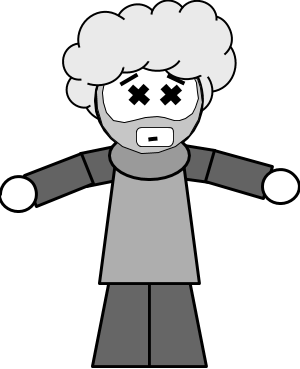

Banquo was a general for the Scottish army alongside Macbeth, and a good general at that. Banquo and Macbeth were practically best friends... until Macbeth killed him, that is.
See, Macbeth really wanted to become king. So when The Witches tell Macbeth that Banquo would beget a line of Kings, Macbeth tries to improve his chances at king by having Banquo and Banquo's son, Fleance, killed. Macbeth orders murderers to do the job, and they do kill Banquo, but they slip up and let Fleance get away.
Banquo does get his revenge though, in a way. After Banquo is killed, Banquo's ghost appears to Macbeth during a dinner with guests. Macbeth is so startled and upset by this that he almost reveals his crimes to the guests at the party. He is only stopped by Lady Macbeth, who tries to play off Macbeth's reactions as "a thing of custom" before dismissing the guests.
Go back